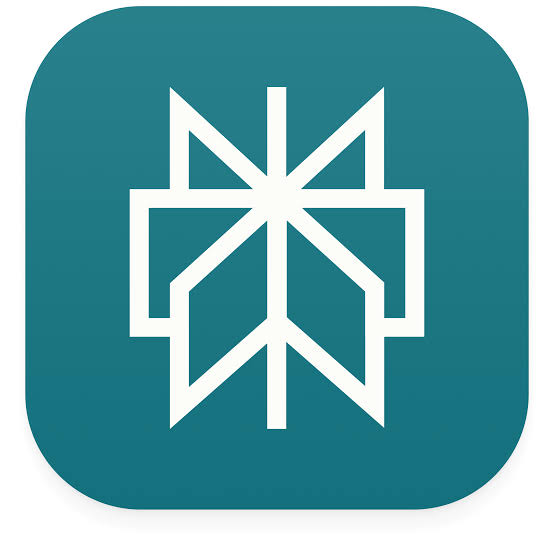

Les IA ne sont pas toutes fortes au même endroit.
ChatGPT, Claude, Gemini, Mistral et Perplexity ne jouent pas exactement le même rôle. Ce Panorama vous aide à comprendre qui ressort selon la mission — sans jargon et sans prétendre qu'un seul outil gagne partout.
Lecture éditoriale fondée sur les capacités officielles publiées par les fournisseurs et sur des usages professionnels. Ce n'est pas un benchmark scientifique ni une garantie de résultat.
- 01La missionÉcrire, chercher, analyser, automatiser, coder ou créer.
- 02L'environnementGoogle, fichiers, navigateur, applications connectées ou code.
- 03Les donnéesPubliques, internes, personnelles ou confidentielles.
- 04Le niveau d'autonomieUne réponse, une méthode réutilisable ou une action dans vos outils.

PerplexityDeux actualités à remettre dans leur contexte.
ChatGPT dépassé par Claude ? Le match se déplace vers les connexions et l'exécution.
La compétition ne porte plus seulement sur la qualité d'une réponse, mais sur la capacité à accéder aux outils, réutiliser une méthode et agir.
Lire l'analyseFable 5 : une puissance supérieure, mais pas un choix automatique.
Anthropic le destine aux tâches les plus longues et complexes. Son coût, ses garde-fous et le niveau réel du besoin restent déterminants.
Lire l'analyseQui est le plus à l'aise sur quelle mission ?
Une lecture simple pour les non-spécialistes. Le « repère principal » indique l'écosystème qui ressort le plus naturellement pour ce besoin aujourd'hui. Les alternatives restent souvent excellentes.
| Mission | Repère principal | Pourquoi | Alternative forte | À surveiller |
|---|
Cinq portes d'entrée, cinq logiques.
Le nom du modèle compte. Mais, pour une TPE, l'environnement complet — fichiers, connexions, agents, outils de recherche et déploiement — compte souvent davantage.
Visualiser les différences sans fabriquer un champion universel.
Les notes sont des repères éditoriaux sur 5, fondés sur les fonctions disponibles à date. Cliquez sur un ou plusieurs écosystèmes pour comparer leurs profils.
La bonne combinaison change selon votre terrain.
Choisissez un profil pour voir une stack de départ et le principal point de vigilance.
Le bon calcul n'est pas le prix de l'abonnement.
Il faut comparer le coût à la valeur du temps utile récupéré — sans oublier le temps de contrôle humain.
Simulation indicative : elle ne tient pas compte des coûts d'intégration, de formation, de maintenance, des erreurs ni du temps de validation.
Ce que disent les notes — et ce qu'elles ne disent pas.
Nous séparons les faits publiés par les fournisseurs de notre lecture éditoriale. Une fonction officiellement annoncée est un fait. Une note de 4,5/5 est une appréciation comparative, pas une mesure scientifique.
Sources primaires. Pages produits, documentations et annonces officielles datées.
Usage professionnel. La question posée est : « à quoi cela sert concrètement dans une petite organisation ? »
Pas de vérité universelle. Les performances varient selon le prompt, les données, le plan payé, les connexions et le pays.
Actualisation nécessaire. Les noms, fonctions, tarifs et disponibilités peuvent évoluer en quelques semaines.
Sources officielles utilisées pour cette édition.
Dernière vérification : 22 juillet 2026. Les liens ouvrent les pages des fournisseurs.
Partons de votre métier, pas du dernier modèle à la mode.
Nous pouvons cartographier vos tâches, vos données et vos outils, puis décider s'il faut former, automatiser ou construire une application métier.